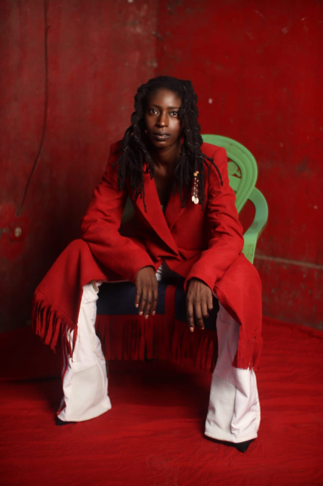

La créatrice
Fondée en 2023, NUMU D est une marque de mode artisanale (textile et bijoux) à impact social, économique et environnemental qui se positionne sur le marché du slow fashion. Le nom signifie "enfant" (dén) de "forgeron" (noumou) en bambara, et le D rappelle le nom de famille de sa créatrice : Sirandou Dianka.
Sirandou est une styliste-designer franco-malienne. Issue de la caste des Niamakalah (artisans forgerons), elle s'est reconvertie dans la mode en 2020. Après avoir parcouru plusieurs pays africains (Sénégal, Côte d'Ivoire, Niger, etc.), elle retourne au Mali, son pays d'origine, pour lancer NUMU D et valoriser ce savoir-faire ancestral.

La démarche artistique
Chaque création prend naissance dans la matière. À partir du coton malien tissé à la main, NUMU D imagine des formes, des coupes et des palettes de couleurs qui font le lien entre héritage textile malien, les inspirations et l'histoire de Sirandou, la créatrice.
Au fil des collections, différents types de tissage ont été explorés, comme la crétone, toile 100 (2 fils), sergé ou encore falé (4 fils). Ainsi que plusieurs techniques de teinture artisanale.
Certaines pièces révèlent des teintes profondes et naturelles comme l'indigo (n'galalan fini), le jaune ocre obtenu à partir du ngalama, ou le marron issu du zoro blé (raisin sauvage), appelé bassilan fini. D'autres intègrent l'imprimé bogolan, réalisé à partir de motifs imaginés puis appliqués à l'argile.
Chaque collection est une manière d'explorer le textile autrement, entre la rencontre des savoir-faire anciens et une vision contemporaine.

Les artisans partenaires
NUMU D s'appuie sur un réseau d'artisans partenaires à travers le Mali : tisserands, teinturiers, forgerons, bijoutiers et couturiers, tous porteurs de savoir-faire transmis de génération en génération.
Pour le textile, la marque collabore notamment avec la coopérative KOYIBATON et CONSOMMONS AFRICAIN, basés à Ségou, pour le travail du tissage, ainsi qu'avec BIOTEX MALI HAND à Bamako pour les teintures artisanales.
NUMU D développe également des pièces de bijouterie en collaboration avec la communauté touareg de l'association TIMIDWA à Bamako, dans une volonté d'explorer d'autres formes de création tout en restant fidèle à son ancrage artisanal.
Ces collaborations durables participent à la préservation des savoir-faire locaux, au soutien de l'économie créative malienne et à une valorisation plus juste du travail artisanal.

Les références
Depuis sa création, NUMU D a présenté ses créations lors de défilés, d'expositions et de projets au Mali, en Italie et en France. Ces expériences témoignent de l'évolution de la marque et de son engagement à promouvoir les savoir-faire artisanaux maliens, contribuant à faire rayonner le savoir-faire textile africain.
Mali Mode Show Défilé Made in Mali, à Bamako Novembre 2023 et 2025.
Nuit du Pagne Tissé, à Ségou, février 2025.
Exposition The Cotton Road à Milan, septembre 2025 et au World cotton day à Rome, octobre 2025.
Afropéen Fashion Week à Paris, Mai 2026.